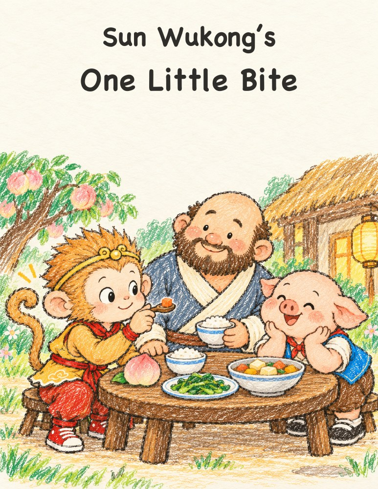
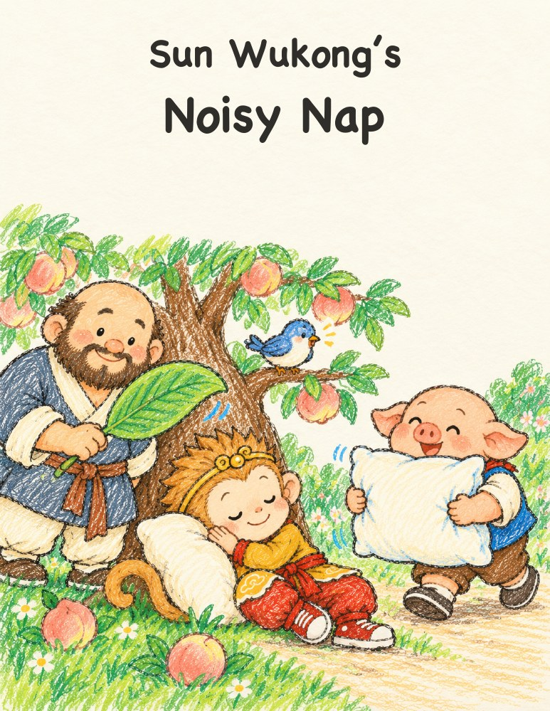

16 页 · 儿童蜡笔涂鸦
悟空学滑冰
Wukong’s Slippy-Slide Skates
小脚像坐上小雪橇。摔一跤，再试一次！
翻开故事 ↗读一读，笑一笑，做个好梦。免费下载，也欢迎打印成小书。 5 本故事
16 页 · 儿童蜡笔涂鸦
Wukong’s Slippy-Slide Skates
小脚像坐上小雪橇。摔一跤，再试一次！
翻开故事 ↗
16 页 · 儿童蜡笔涂鸦
Wukong and the Big Red Truck
跟着消防员 Ben，走近一辆很酷的大红消防车。
翻开故事 ↗
16 页 · 儿童蜡笔涂鸦
Wukong’s Wibble-Wobble Ride
酷酷的自行车骑起来，却有些摇摇晃晃！
翻开故事 ↗
10 页 · 儿童蜡笔涂鸦
Sun Wukong’s One Little Bite
从一小口新味道，到一顿暖暖的晚餐。
翻开故事 ↗
10 页 · 儿童蜡笔涂鸦
Sun Wukong’s Noisy Nap
悟空想睡午觉，可朋友们的好意有一点点吵。
翻开故事 ↗没有找到这个故事，试试别的关键词吧。
短短的英文，慢慢读。为亲子共读和刚开始认字的小朋友准备。
八戒是悟空最好的朋友之一。朋友们互相照顾，也允许彼此按照自己的节奏学习。
白天有挑战，有一点点好笑。故事最后，一切安静下来。
如果这些故事陪伴了你们的睡前时光，欢迎自愿支持下一本。所有故事始终可以免费下载，无需付款，也无需注册。